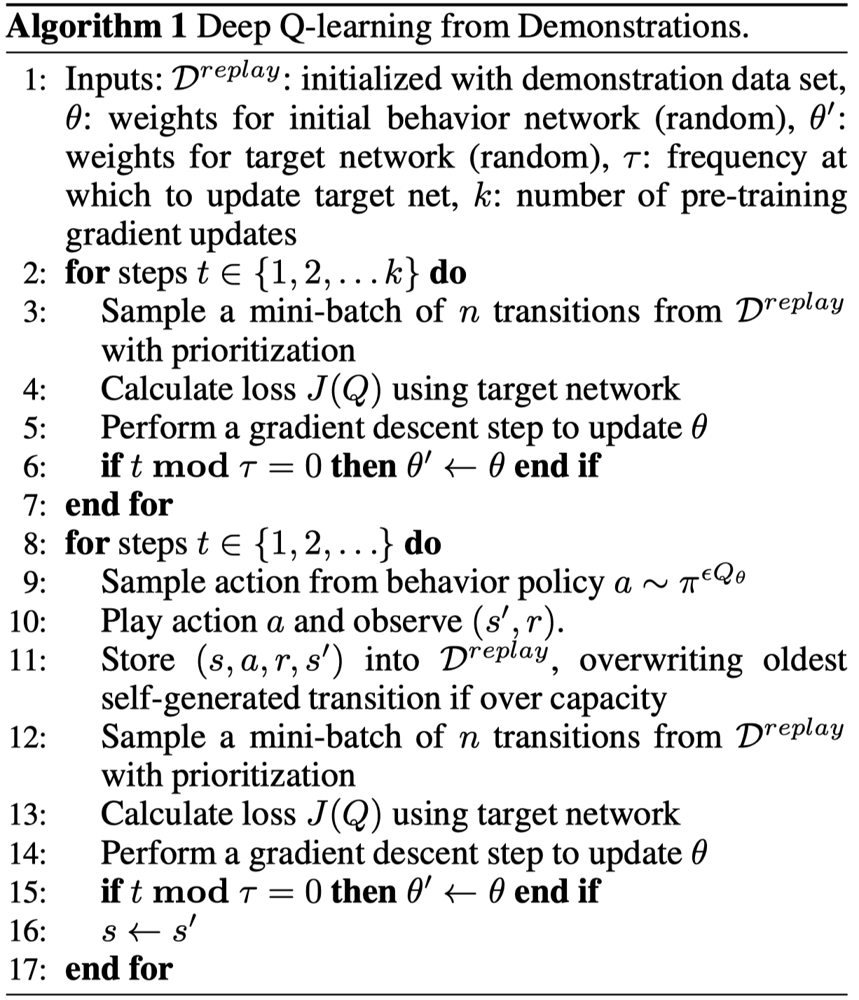
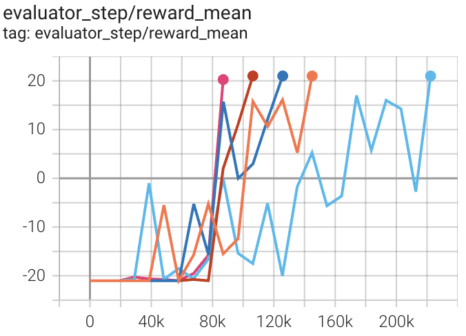
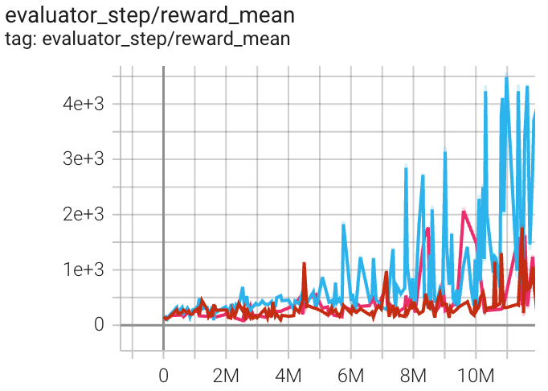
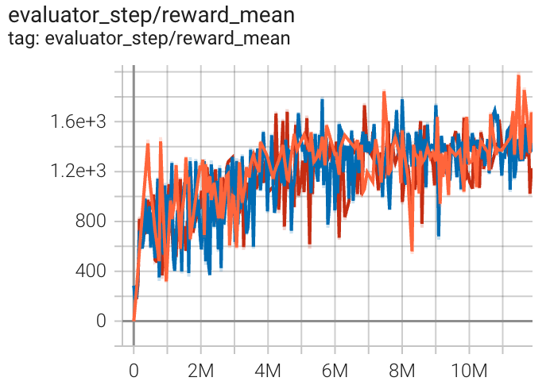

DQfD¶
Overview¶
DQfD was proposed in Deep Q-learning from Demonstrations by DeepMind, which appeared at AAAI 2018. It first pretrains solely on demonstration data, using a combination of 1-step TD, n-step TD, supervised, and regularization losses so that it has a reasonable policy that is a good starting point for learning in the task. Once it starts interacting with the task, it continues learning by sampling from both its selfgenerated data as well as the demonstration data. The ratio of both types of data in each mini-batch is automatically controlled by a prioritized-replay mechanism.
DQfD leverages small sets of demonstration data to massively accelerate the learning process and performs better than PDD DQN, RBS, HER and ADET on Atari games.
Quick Facts¶
DQfD is an extension algorithm of DQN.
Store the demonstrations into an expert replay buffer.
Pre-train the network with expert demonstrations and accelerate the subsequent RL training process.
Agent gathers more transitions for new replay buffer (see detail_explanation). Trains network on mixture of new replay buffer and expert replay buffer.
Network is trained with special loss function made up of four parts: one-step loss, n-step loss, expert large margin classification loss and L2 regularization.
Key Equations or Key Graphs¶
The DQfD overall loss used to update the network is a combination of all four losses.
Overall Loss: \(J(Q) = J_{DQ}(Q) + \lambda_1 J_n(Q) + \lambda_2J_E(Q) + \lambda_3 J_{L2}(Q)\)
one-step loss: \(J_{DQ}(Q) = (R(s,a) + \gamma Q(s_{t+1}, a_{t+1}^{max}; \theta ^') - Q(s,a;\theta))^2\), where \(a_{t+1}^{max} = argmax_a Q(s_{t+1},a;\theta)\).
n-step loss: \(J_n(Q) = r_t + \gamma r_{t+1} + ... + \gamma^{n-1} r_{t+n-1} + max_a \gamma^n Q(s_{t+n},a)\).
large margin classification loss: \(J_E(Q) = max_{a \in A}[Q(s,a) + L(a_E,a)] - Q(s,a_E)\), \(L(a_E,a)\) is a margin function that is 0 when \(a = a_E\) and positive otherwise. This loss forces the values of the other actions to be at least a margin lower than the value of the demonstrator’s action.
L2 regularization loss: \(J_{L2}(Q)\) help prevent from over-fitting.
Pseudo-code¶
{kind=link}
Note
In Phase I, the agent just uses the demonstration data, and does not do any exploration. The goal of the pre-training phase is to learn to imitate the demonstrator with a value function that satisfies the Bellman equation. During this pre-training phase, the agent samples mini-batches from the demonstration data and updates the network by applying the total loss J(Q).
In Phase II, the agent starts acting on the system, collecting self-generated data, and adding it to its replay buffer. Data is added to the replay buffer until it is full, and then the agent starts overwriting old data in that buffer. However, the agent never over-writes the demonstration data. All the losses are applied to the demonstration data in both phases, while the supervised loss is not applied to self-generated data.
Extensions¶
DeepMind has extended DQfD in several ways. Upon a literature search, it seems like two relevant follow-up works are:
Distributed Prioritized Experience Replay
The main idea of this paper is to scale up the experience replay data by having many actors collect experience. Their framework is called Ape-X, and they claim that Ape-X DQN achieves a new state of the art performance on Atari games. This paper is not that particularly relevant to DQfD, but we include it here mainly because a follow-up paper (see below) used this technique with DQfD.
Observe and Look Further: Achieving Consistent Performance on Atari
This paper proposes the Ape-X DQfD algorithm, which as one might expect combines DQfD with the distributed prioritized experience replay algorithm.
Implementations¶
The DI-engine implements DQfD.
The default config of DQfD Policy is defined as follows:
- class ding.policy.dqfd.DQFDPolicy(cfg: dict, model: Optional[Union[type, torch.nn.modules.module.Module]] = None, enable_field: Optional[List[str]] = None)[source]
- Overview:
Policy class of DQFD algorithm, extended by Double DQN/Dueling DQN/PER/multi-step TD.
- Config:
ID
Symbol
Type
Default Value
Description
Other(Shape)
1
typestr
dqn
RL policy register name, refer toregistryPOLICY_REGISTRYThis arg is optional,a placeholder2
cudabool
False
Whether to use cuda for networkThis arg can be diff-erent from modes3
on_policybool
False
Whether the RL algorithm is on-policyor off-policy4
prioritybool
True
Whether use priority(PER)Priority sample,update priority5
priority_IS_weightbool
True
Whether use Importance Sampling Weightto correct biased update. If True,priority must be True.6
discount_factorfloat
0.97, [0.95, 0.999]
Reward’s future discount factor, aka.gammaMay be 1 when sparsereward env7
nstepint
10, [3, 5]
N-step reward discount sum for targetq_value estimation8
lambda1float
1
multiplicative factor for n-step9
lambda2float
1
multiplicative factor for thesupervised margin loss10
lambda3float
1e-5
L2 loss11
margin_fnfloat
0.8
margin function in JE, here we setthis as a constant12
per_train_iter_kint
10
number of pertraining iterations13
learn.updateper_collectint
3
How many updates(iterations) to trainafter collector’s one collection. Onlyvalid in serial trainingThis args can be varyfrom envs. Bigger valmeans more off-policy14
learn.batch_sizeint
64
The number of samples of an iteration15
learn.learning_ratefloat
0.001
Gradient step length of an iteration.16
learn.target_update_freqint
100
Frequency of target network update.Hard(assign) update17
learn.ignore_donebool
False
Whether ignore done for target valuecalculation.Enable it for somefake termination env18
collect.n_sampleint
[8, 128]
The number of training samples of acall of collector.It varies fromdifferent envs19
collect.unroll_lenint
1
unroll length of an iterationIn RNN, unroll_len>1
The network interface DQfD used is defined as follows:
- class ding.model.template.q_learning.DQN(obs_shape: Union[int, ding.utils.type_helper.SequenceType], action_shape: Union[int, ding.utils.type_helper.SequenceType], encoder_hidden_size_list: ding.utils.type_helper.SequenceType = [128, 128, 64], dueling: bool = True, head_hidden_size: Optional[int] = None, head_layer_num: int = 1, activation: Optional[torch.nn.modules.module.Module] = ReLU(), norm_type: Optional[str] = None)[source]
- __init__(obs_shape: Union[int, ding.utils.type_helper.SequenceType], action_shape: Union[int, ding.utils.type_helper.SequenceType], encoder_hidden_size_list: ding.utils.type_helper.SequenceType = [128, 128, 64], dueling: bool = True, head_hidden_size: Optional[int] = None, head_layer_num: int = 1, activation: Optional[torch.nn.modules.module.Module] = ReLU(), norm_type: Optional[str] = None) None[source]
- Overview:
Init the DQN (encoder + head) Model according to input arguments.
- Arguments:
obs_shape (
Union[int, SequenceType]): Observation space shape, such as 8 or [4, 84, 84].action_shape (
Union[int, SequenceType]): Action space shape, such as 6 or [2, 3, 3].encoder_hidden_size_list (
SequenceType): Collection ofhidden_sizeto pass toEncoder, the last element must matchhead_hidden_size.dueling (
dueling): Whether chooseDuelingHeadorDiscreteHead(default).head_hidden_size (
Optional[int]): Thehidden_sizeof head network.head_layer_num (
int): The number of layers used in the head network to compute Q value outputactivation (
Optional[nn.Module]): The type of activation function in networks ifNonethen default set it tonn.ReLU()norm_type (
Optional[str]): The type of normalization in networks, seeding.torch_utils.fc_blockfor more details.
- forward(x: torch.Tensor) Dict[source]
- Overview:
DQN forward computation graph, input observation tensor to predict q_value.
- Arguments:
x (
torch.Tensor): Observation inputs
- Returns:
outputs (
Dict): DQN forward outputs, such as q_value.
- ReturnsKeys:
logit (
torch.Tensor): Discrete Q-value output of each action dimension.
- Shapes:
x (
torch.Tensor): \((B, N)\), where B is batch size and N isobs_shapelogit (
torch.FloatTensor): \((B, M)\), where B is batch size and M isaction_shape
- Examples:
>>> model = DQN(32, 6) # arguments: 'obs_shape' and 'action_shape' >>> inputs = torch.randn(4, 32) >>> outputs = model(inputs) >>> assert isinstance(outputs, dict) and outputs['logit'].shape == torch.Size([4, 6])
Benchmark¶
environment |
best mean reward |
evaluation results |
config link |
comparison |
|---|---|---|---|---|
Pong (PongNoFrameskip-v4) |
20 |
 |
|
|
Qbert (QbertNoFrameskip-v4) |
2356 |
 |
|
|
SpaceInvaders (SpaceInvadersNoFrame skip-v4) |
1371 |
 |
|
Reference¶
Hester T, Vecerik M, Pietquin O, et al. Deep q-learning from demonstrations[C]//Thirty-second AAAI conference on artificial intelligence. 2018.
Blog: Combining Imitation Learning and Reinforcement Learning Using DQfD